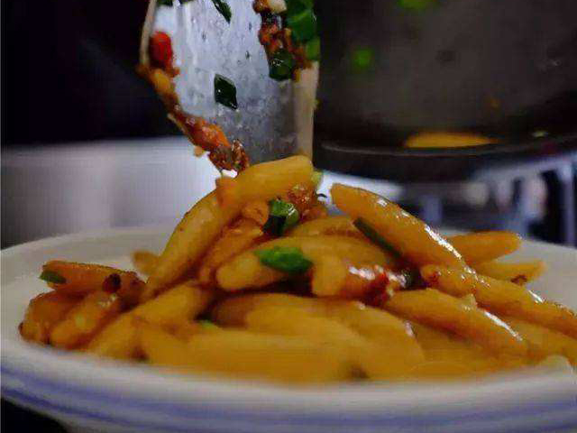
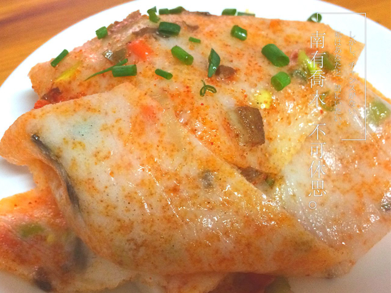
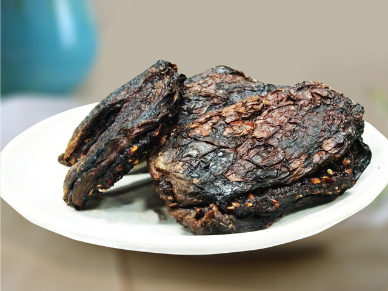
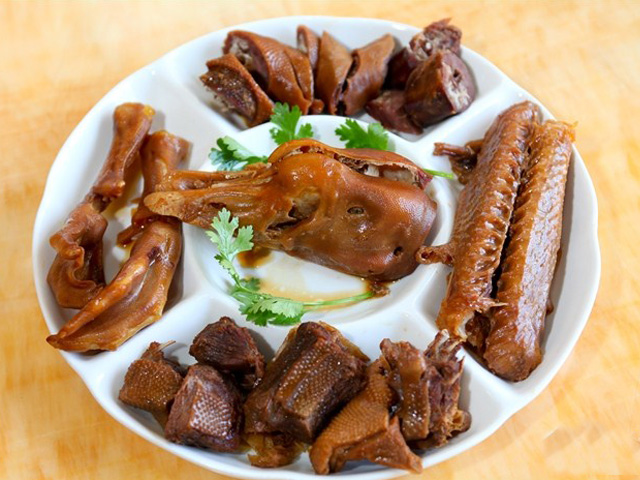
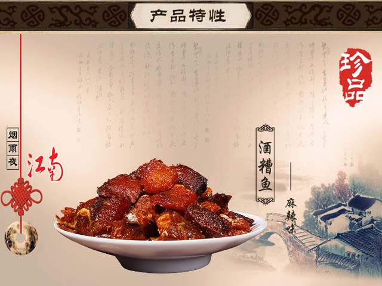
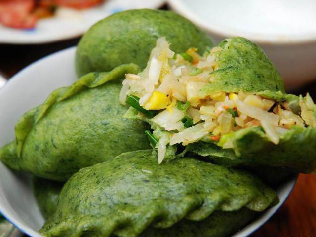

灰汁果
自婺源灰汁果，并不是一种从果树上摘下来的水果，而是一种用大米粉做成的果子糕点。这种果子由于是用稻草灰的汁水做成的，故当地人取名为婺源灰汁果。

汽糕
把一块汽糕放进嘴里，轻轻一咬，筋道有嚼劲，一丝醇香留存于舌尖，令人回味无尽。婺源汽糕表面鲜香油亮，光洁透亮，中间布满了蜂窝状的气孔。

茄子干
婺源茄子干是江西省赣东北上饶市婺源县的特色小吃，它集香、辣、甜、咸多种味道为一体，口感既韧又软，且有过口忘不了。

糖醋鹅脖
婺源糖醋鹅颈是一道有着吴地风味的婺源特色菜肴。婺源古属徽州，刀锋私以为全国八大菜系之一的徽菜，一定烙印着徽州人出世的奔波与归田园居的安逸

酒嘈鱼
婺源酒糟鱼色泽金黄，香而不腥，肉味鲜美，开胃爽口，且久食不腻，冷热食均可。简易方便，是居家、宾馆、旅游和馈赠亲友之佳品。

清明果
清明果是江西、安徽、浙江、福建部分地区的汉族传统小吃，一般在清明节食用。该小吃形似饺子，外皮多用艾草或鼠鞠草做成。